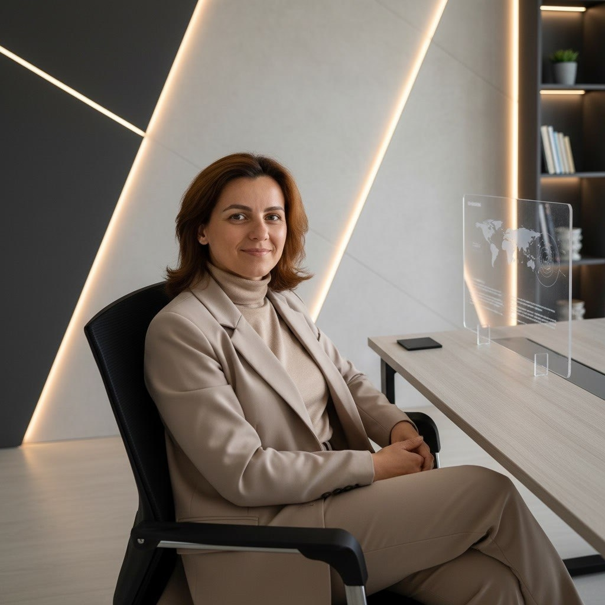

Корпоративный тренер Soft & Hard Skills | Наставник | Эксперт по продажам и управлению
Мой подход базируется на методологии непрерывного развития Lifelong Learning. Как наставник с профильным образованием и глубокой практикой, я не просто передаю инструменты, а развиваю у вас способность к метаобучению. Это «навык над навыками», усиление которого позволит вам быстро, системно и результативно прокачивать любые hard и soft skills.
Что делаем: Развиваем способность к рефлексии и пониманию ваших когнитивных особенностей.
Результат: Вы четко видите свои «слепые зоны», понимаете, как именно ваш мозг обрабатывает информацию, и управляете своим развитием осознанно, а не хаотично.
Что делаем: Осваиваем навыки управления собственным процессом обучения.
Результат: Вы умеете разбивать сложные задачи на понятные шаги, экологично управлять когнитивной нагрузкой, сохранять психологическую устойчивость и самомотивацию в условиях изменений.
Что делаем: Встраиваем новые паттерны и навыки напрямую в контекст ваших реальных рабочих задач.
Результат: Никакой «книжной теории». Вы учитесь извлекать практическую пользу, переносить эффективные паттерны из одной сферы в другую и безболезненно отказываться от старых, неработающих моделей поведения.
Результат компании — это сумма ежедневных действий ваших сотрудников. Но большинство людей заперты в рамках привычных автоматизмов и повторяют их из раза в раз, даже если они не приближают к цели. Соединив профильное образование и практическую базу, я разработала трехэтапную систему, которая выявляет эти автоматизмы, трансформирует их и гарантирует долгосрочный результат:
Я подсвечиваю скрытые привычки и деструктивные установки сотрудников, которые тормозят бизнес-процессы. Это выявляет истинные, а не мнимые точки роста команды.
Я выстраиваю трек развития максимально гибко и реалистично. Программа создается под актуальные задачи бизнеса, портрет команды и доступные ресурсы.
Я передаю участникам инструменты метаобучения для непрерывного развития. Это усиливает команду и переводит бизнес-показатели на новый качественный уровень.
Практика внутреннего бизнес-тренера в крупной федеральной B2B-компании с годовым оборотом более 2,5 млрд рублей. Понимаю процессы корпораций изнутри.
Прошла путь от мерчандайзера до руководителя отдела и профессионального наставника. 6 лет в управлении и 13 лет в продажах — знаю всю специфику рынка.
Высшее образование «Менеджмент», профессиональная переподготовка «Мастерство ведения тренинга», повышение квалификации «Наставничество в групповой и индивидуальной работе».
Запускаю результативные отделы продаж: от системной настройки процессов до вывода каждого сотрудника на пик эффективности.
Экспертно управляю групповой динамикой и фасилитацией. Сочетаю глубокое индивидуальное сопровождение с бережной, поддерживающей подачей: простым языком о самом важном.
Реальные отзывы HRD и CEO крупных компаний. Результаты выпускников — от специалистов отделов сопровождения до топ-менеджеров.
Я провожу практические симуляции на основе реальных кейсов ваших сотрудников. Каждый участник получает индивидуальное сопровождение и развивающую обратную связь.
Я модерирую интенсивные сессии под конкретный запрос бизнеса. Результат — детальный разбор актуальных задач и готовый план внедрения решений.
Я организую отработку живых сценариев: переговоры с клиентами, встречи «руководитель — сотрудник» 1-на-1 и фасилитацию групповых собраний.
Я разрабатываю матрицы компетенций, провожу оценку (метод 360, интервью) и создаю под ключ базу знаний и наполнение СДО: планы адаптации, курсы, тесты.
Я осуществляю стартовую и итоговую аттестацию команды, оцениваю динамику навыков и мотивации на этапе посттренингового сопровождения.
Я настраиваю ритм менеджмента, эффективные планерки и интеграцию CRM. Создаю уникальный обучающий контент по специфике вашего бизнеса: от презентаций до видеоуроков.
Реальные результаты участников — лучшее подтверждение эффективности программ.
Готова обсудить задачи вашей команды и предложить оптимальный формат сотрудничества.